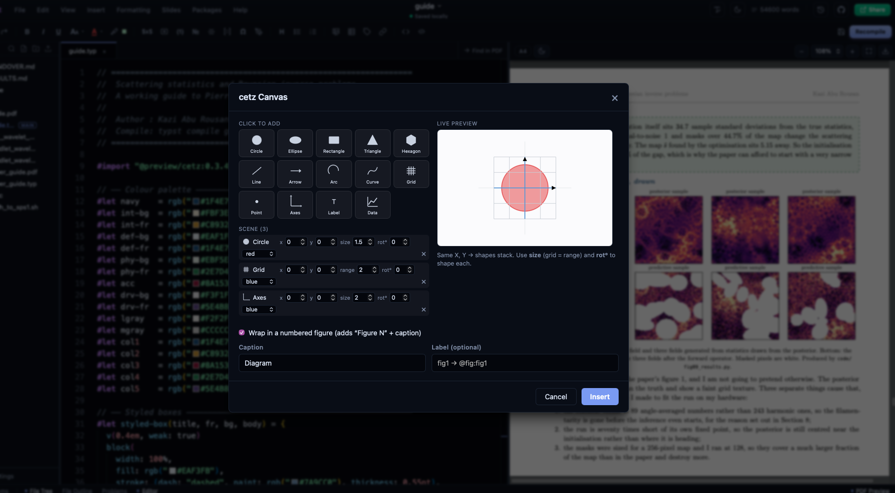
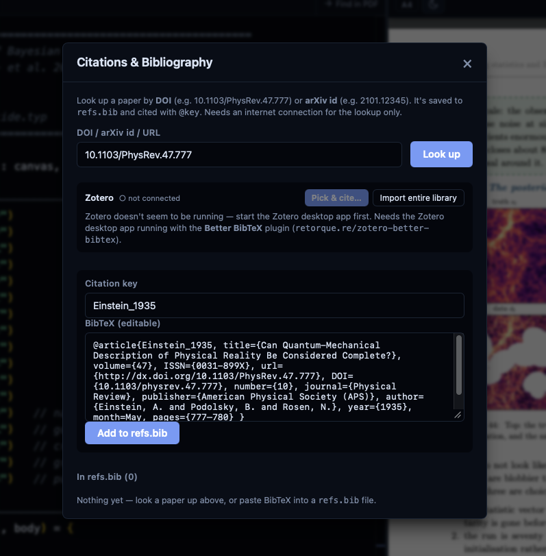

Pick the hard part
Matrix Studio, Plot Studio, cetz Canvas, Slide Studio, Feynman builder, Flowchart to Code, physics snippets, page setup, tables, figures, citations, or references.
less syntax recallLocal-first scientific writing
Hilbert is an unofficial desktop IDE for Typst. Write in Monaco, preview the PDF live, build the annoying scientific parts visually, run optional code cells, and keep the project as ordinary files on your machine.

Note 01
Hilbert's visual tools are meant to remove repetitive syntax work, not hide the document. The output lands back in the source so you can edit, review, commit, export, and move the project elsewhere.
Matrix Studio, Plot Studio, cetz Canvas, Slide Studio, Feynman builder, Flowchart to Code, physics snippets, page setup, tables, figures, citations, or references.
less syntax recallDrag, type values, choose columns, set colors, arrange shapes, preview the diagram, and adjust details while the app keeps the source form in mind.
visual, but not trappedGenerated material is inserted into your document as Typst, cetz, cetz-plot, fletcher, bibliography entries, or assets that the project can carry.
editable after insertThe PDF recompiles as you type. Problems show diagnostics, and Hilbert keeps the previous good PDF visible when the current edit breaks compilation.
tight feedback loopExport PDF, PNG, SVG, HTML, plain Typst, or a whole project folder. Use Git, local-folder sync, Google Drive, WebDAV, Nextcloud, or ownCloud if configured.
ordinary files surviveNote 02
Real screenshots from the app documentation. These are the features that should be visible on the page because they explain why Hilbert is more than a plain text editor.

2D functions, 2D data, implicit and parametric plots, 3D surfaces, plus launchers for the interactive 3D studio and Python/matplotlib runner.

Build matrices and equation structures visually, including augmentation lines and bracket styles, then insert editable Typst math.

Draw vertices and propagators visually. Hilbert emits editable cetz source for Feynman diagrams instead of a throwaway sketch.

Turn drawn logic into structured while, if, and for code when a visual plan needs to become executable structure.

Edit 16:9 decks with templates, shapes, curves, arrows, equations, alignment, thumbnails, undo/redo, and grid snapping.

Look up DOI or arXiv records, save BibTeX, cite keys, add bibliographies, and catch undefined, duplicate, or unused labels.
Note 03
Code execution is optional. If the interpreters exist on your machine, Hilbert can run snippets, write results below code blocks, insert generated figures, or convert symbolic output into typeset equations.

Run a selection or a code block. Insert text output, a plot, or equation-mode math such as a derivative.
Julia cells can share variables during Run Notebook. Latexify support is used for equation-mode output when installed.
Hilbert can call WolframScript for snippets. The handbook notes Wolfram is not OS-confined and keeps the source-pattern screen instead.
Notebook runs have a wall-clock timeout, 45 seconds by default, plus output truncation at 8 MB and OS limits on CPU and file size.
Linux uses bubblewrap when available. macOS uses Seatbelt. Windows and disabled-sandbox runs use a pattern screen for process, network, shell, and destructive calls.
Set ALLOW_CODE_EXECUTION=0 to disable code execution completely. EXEC_TIMEOUT_MS changes the per-run timeout.
Note 04
The everyday tools matter too: file handling, imports, templates, collaboration, performance, and export paths.
Open a folder, set the main Typst file, work with multi-file projects, use typst.toml, detect external edits, and choose what to keep when local unsaved edits conflict.
New file/folder, rename, duplicate, delete, drag/drop moves, cut/copy/paste, upload assets, compress to zip, reveal in file manager, and full-text search.
Typst Universe templates with rendered preview, plus offline templates including a two-column journal paper and LaPreprint-style preprint.
CSV, TSV, Excel, JSON, YAML, and TOML previews can become Typst tables, plots, or variables. Fonts can be imported from TTF and OTF files.
PDF with page ranges, PDF/A options, tagging, and pretty printing. Also PNG, SVG, HTML, plain Typst, and whole-project folder export.
Encrypted Yjs updates, presence, cursors, and preview sharing can run on LAN or through a standalone relay. The host must stay online.
More real screens

Preview spreadsheets and structured files, then insert them into the document as tables, plots, or variables.

Bra-kets, commutators, Dirac and Klein-Gordon equations, QED, Einstein equations, FRW metrics, and more.

Experimental offline-first collaboration for projects, generated plots, cursors, whiteboards, and preview state.
Install
Hilbert is the editor. Typst compiles. tinymist gives the richer editor intelligence. Python, Julia, and WolframScript are only needed for optional code execution.
The handbook lists winget as the quick path. Release installers are also available on GitHub.
Choose Apple Silicon for M-series Macs and Intel for older Macs. The app is not notarised, so the handbook includes a first-launch signing workaround.
Debian/Ubuntu can use the apt repository. Other distros can use AppImage or rpm. Install bubblewrap for confined code execution.
Support
No licence, no accounts, no telemetry, and nothing held back for a paid tier. If it saves you time on a thesis or a paper you are welcome to put something back, and just as welcome not to.
One-off or monthly, handled entirely by GitHub. Cards issued outside India go through here without any fuss.
Indian cards are often refused by international processors, so Sponsors frequently fails from here. Scan this with any UPI app instead.
Point any UPI app at this code and it will fill in the rest. Any amount — nothing is unlocked by paying, and nothing is withheld by not.
Honest notes
Hilbert is an independent, community-built editor for Typst. It is not affiliated with, endorsed by, or maintained by the Typst team.
The default workflow is a local desktop app editing a folder on disk. Browser hosting and collaboration exist, but they are separate modes with their own setup and tradeoffs.
The Tauri build checks for updates and asks before installing. AppImage can auto-update. deb installs are expected to update through apt.
Encrypted collaboration is useful, but the handbook still recommends backups for serious work and notes the host must stay online.